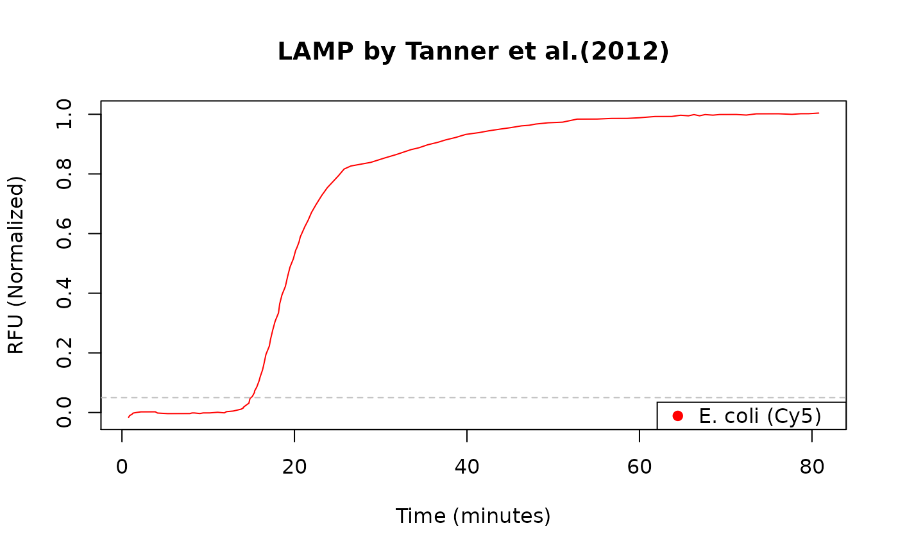

LAMP.RdReal-time amplification plot of a Loop-mediated isothermal amplification (LAMP) by Tanner et al.(2012) in a CFX96 Real Time System (Bio-Rad Laboratories, Hercules, CA, USA).
data("LAMP")
A data frame with 115 observations on the following 2 variables.
TimeTime in minutes
Normalized.RFURFU (Normalized)
The data were digitized as described by Poisot (2011). The image for data extraction was taken from Figure 4B by Tanner et al.(2012). For further experimental and technical details refer to Tanner et al.(2012).
The original data were taken from Figure 4B by Tanner et al.(2012).
Poisot, T. (2011). The digitize Package: Extracting Numerical Data from Scatterplots. The R Journal 3, 25--26.
Tanner, N.A., Zhang, Y., and Evans, T.C. (2012). Simultaneous multiple target detection in real-time loop-mediated isothermal amplification. BioTechniques 53, 81--89.
plot(LAMP, main = "LAMP by Tanner et al.(2012)", xlab = "Time (minutes)", ylab = "RFU (Normalized)", col = "red", type = "l")